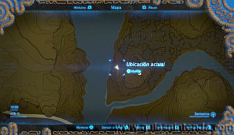
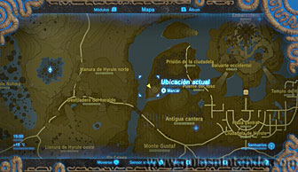
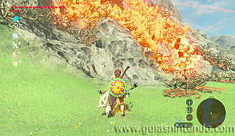
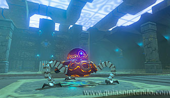
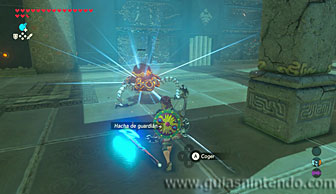
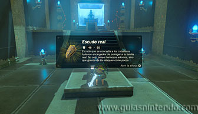

Santuario de Nineah
Puedes entrar en este santuario desde que llegas a la región de la torre de la llanura. Está al oeste del Castillo de Hyrule.

Para localizarlo tendrás que quemar las zarzas que hay delante. Después rompe la entrada a la cueva que se ve tapada por rocas agrietadas.

Debes derrotar a un miniguardián 2.0 que ya conoces. No te costará acabar con él.

Después dirígete al altar y en el camino podrás abrir un cofre que contiene una Escudo real. Cuando llegues al altar podrás examinarlo para obtener un símbolo de valía.
